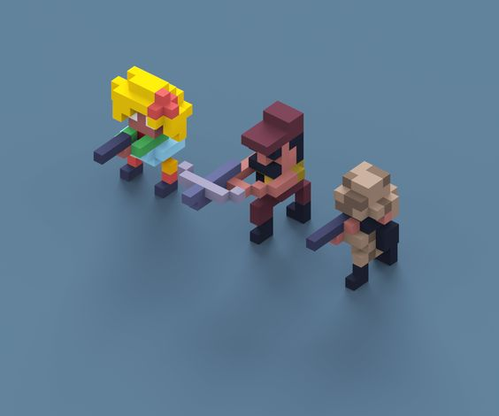

如何编辑开发者文档
简介
参与编辑此文档，首先需要下载好Python和pip。
MkDocs是一个由Python实现的，快速、简单的静态网站生成器，适用于构建项目文档。文档源文件以Markdown编写，并使用一个YAML文件来进行配置。
安装MkDocs：pip install mkdocs
本文档的主题使用 Material for MkDocs， 安装：pip install mkdocs-material
参考资料
建议编辑使用本文档的时候，随时参考一下资料：
文档结构
mkdocs.yml # 配置文件
docs/
index.md # 主页
DevLogs/... # 开发日志
HowTos/... # 开发教程
Meetings/... # 会议记录
Resources/... # 资源汇总
编辑文档
注意，Markdown的语法所用的风格符合均为英文符合，所以编辑的时候需要注意。
新建文档
在对应的文件夹下，以 YYYY-MM-DD-文件名.md 的格式新建文件。并且将其添加到 mkdocs.yml 文件中，对应的文件夹下：
nav:
- 主页: index.md
- 开发日志:
- DevLogs/test.md
- 开发教程: ...
文件名的时间以创建文件的时间为准，后续如果修改就在Commit Message中注明即可。
所有的其他素材储存到 docs/assets/ 文件夹中。添加图片以以下格式添加：


测试与发布
mkdocs serve- 本地部署测试。mkdocs build- 创建html网页。mkdocs -h- 帮助。
在每次commit之前，运行命令 mkdocs gh-deploy 来准备GitHub Page的部署。